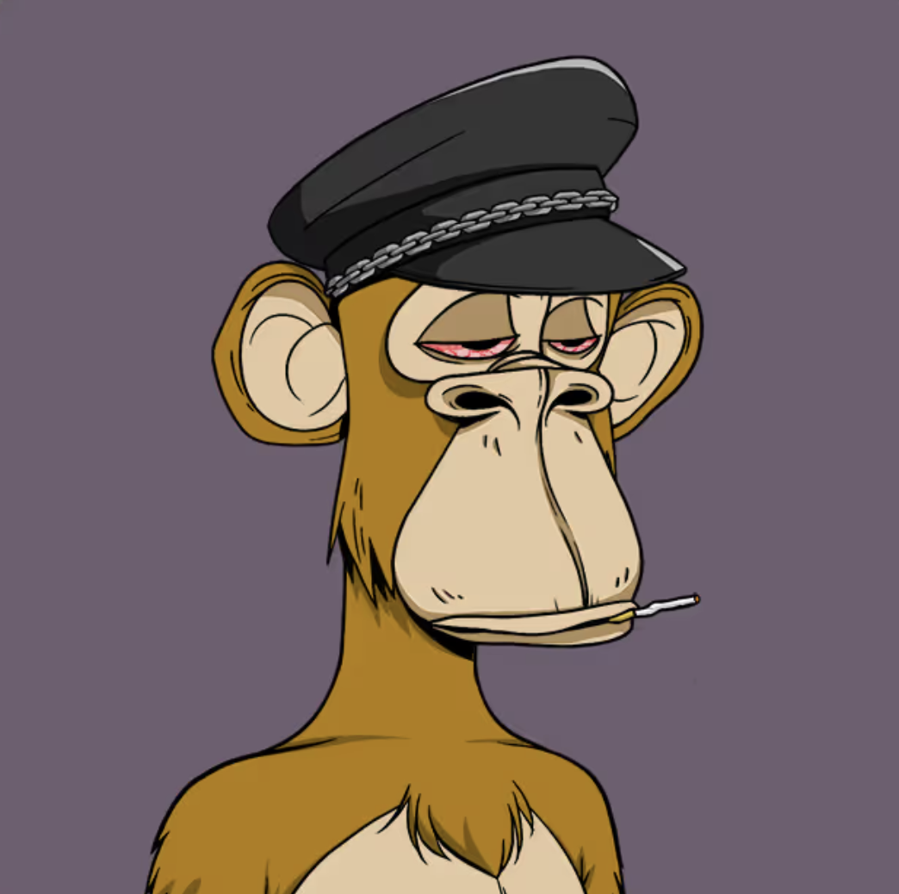

NFTs X metaphysics

This project was the final project for our junior seminar, CS302: The Why Behind Everyday Technologies, with Prof. Jean Salac at Carleton College. The task is to explain an everyday technology, to build a prototype of it and lead an interdisciplinary class-wide discussion, combining the technical aspects with a branch of philosophy assigned to us. The topic of our project is NFTs and the branch of philosophy is Metaphysics.
What are NFTs?If you somehow missed the whirlwind of the early 2020s, NFTs, or Non-Fungible Tokens are digital tokens stored on the blockchain, used as a certificate of ownership/authenticity.
As Oxford Languages defines the term, fungible is an adjective that means "replaceable by another identical item; mutually interchangeable." Cash is fungible: you can exchange one $10 bill for two $5 bills, and they inherently have the same value. NFTs don't play by those rules: each one of them has a unique identifier and value, not inherently the same as any other.
At a very basic level, NFTs can be thought of as JSON files in a database. They store a token number and a URL that points to some metadata, i.e. the asset that corresponds to the token.
NFTs are governed by smart contracts: pieces of code that live on the blockchain and run each time an NFT is part of a transaction. The security, anonymity, transparency, and authenticity that blockchain promises is what makes NFTs so appealing, and what captured the imagination of everyone who partook in the NFT market in the early 2020s.
Applications of NFTsNFTs are most often thought of in the context of digital art, such as the Bored Ape collection, or the Cryptopunks. However, there are much wider use cases for NFTs. They are used in videogames to represent in-game items, recording ownership on the blockchain. This expands the game's marketplace to an external capacity, and players can trade and purchase these items on a separate marketplace using NFTs. Music Festivals like Coachella and Rolling Loud minted NFTs that grant the owner lifetime access to shows: a permament ticket.

NFTs are also used to verify physical ownership of items. For example, Tiffany's dropped an 'NFTiff' collection, where each item came with an NFT that proved authenticity and ownership.
Our PrototypeWe built a naive, local blockchain where we could explore and demonstrate how NFTs behave on the blockchain. The blockchain was built in Python and the metadata for the NFTs was hosted on Github Pages for convenience. In real life, the meteadata is usually hosted on IPFS (InterPlanetary File System), a decentralized protocol and network for distributed file storage and sharing. Here is a link to the repository.
We defined simple python classes for each component of the system: user, nft, block, and of course, the blockchain. We wrote a command-line interface wrapper that enabled a real-time demo of the program as well.

For simplicity and ease of explanation, each block contained only transaction. Our blockchain was constructed with industry-level standards as well: it used the SHA-256 hash function, implemented mining difficulty by hash iteration, and provided NFT metadata hosting on external storage (Github Pages).


The Ship of Theseus is a classic metaphysics thought experiment. Over his voyage, Theseus must replace parts of his ship as needed. First a plank, then another, and then maybe the sails. Eventually, the ship consists of entirely parts: the parts from when Theseus set out on his journey have been replaced. If those 'original' parts are then found and put together into another ship, which ship is the original ship?
We compared this to dNFTs (Dynamic NFTs). dNFTs are tokens that modify their associated asset based on external factors. For example, the NBA's "The Association" collection was an NFT drop for the 2022 season. Each player card would update based on player and team performance. The token remained the same; the asset changed over time.


Applying this model of understanding to the Ship of Theseus, we can argue that the ship at the end of the journey, with all the replaced parts is the 'original' ship. The token stays the same; the asset changes. Similarly, the semantic relationship (Theseus's Ship) stays the same and the physical parts of it change. At each stage of replacement, the ship was the original ship. Each new part was at some point part of the original ship. Applying the dNFT model allows us to debunk the false dichotomy of the original question.
What does it mean to own something?In Western society, it is easy to conceive of ownership as a basic part of life: it is commonplace to own things. Private ownership is a basic part of everyday life. You can own a pair of shoes, a jacket, a computer, a chair, a house. You can even own land. It is a relationship of owner and property. This model of ownership is not innate to human life. Other cultures have very different perceptions of ownership, especially when it comes to land.
In China, for example, private ownership of land is illegal. Not in the way that murder is illegal, i.e. one can commit the crime and be punished for it, but in a fundamental sense: there is no provision to own land in the laws. Land is owned by the state, or by collectives like villages. Use of the land is on a long-term lease basis; typically 70 years for residential use, 50 for corporate use. (The State Council - The People's Republic of China, 2019)
For the Inuit people of Greenland, land is a shared community resource and does not fall into the category "things that can be owned". Land is a common resource and is managed by collectives and the state rather than private individuals. (Gronholt-Pedersen, 2026)
NFTs have caused similar controversy and debate over ownership. Spice DAO (Decentralised Anonymous Organisation) was a group that pooled resources to purchase a rare art book. It was Alejandro Jodorowsky's Dune artbook that was meant for a now-scrapped adaptation project of Frank Hebert's Dune. The group overpaid by 10000%, dropping $3 million dollars at auction on an item that was estimated to sell for around $30,000. The group planned to mint NFTs of the book's art for profit, before burning the physical copy of the book to ensure scarcity. However, a critical flaw in this plan was the fact that buying the book didn't give the group the IP rights to the franchise. It ended up being a huge flop and Spice DAO was unable to achieve their NFT dreams.
We can see where they went wrong. When you own an NFT, you own everything about it: it is your property. You can sell merch of it, you can make media of it etc. You own the rights to the NFT. Spice DAO got it backwards: owning a Harry Potter book does not give me rights to the Harry Potter franchise.
Tangible & Physical vs DigitalThrough our class-wide discussion, I was able to narrow down my theory on why NFTs failed to the idea of tangibility and physicality. In particular, when discussing why the Mona Lisa seems to have more value than an NFT, Joe and Klaus brought up the point of physicality and history. The security and anonymity provided by blockchain ends up being the biggest factor against its success: people don't like having their things locked up on a server somewhere. It may be safe and secure and anonymous, but it doesn't feel like you own anything. In his book Wild Experiment: Feeling Science and Secularism after Darwin, Donovan Schaefer argues that thinking and feeling are not parts of a binary: thinking stems from feeling. This framework is called cogency theory, and it allows me to argue that even though it may appear logically sound to own things virtually, it will never be as cogent as owning a physical object.
We can see this phenomenon reflected in the consumer landscape today: under the overwhelming pressure of companies moving to subscription-based models, consumers crave ownership and physical media. NFTs follow a similar arc: they may offer a technically sound solution, but they fail the test of cogency for the masses.
Works CitedAll images of NFTs were taken from Opensea
Oxford Languages. (n.d.). In Oxford Languages Dictionary. Retrieved March 14, 2026 from https://www.google.com/search?q=fungible
Gronholt-Pedersen, J. (2026, January 29). No one owns our arctic land, we share it, say Greenland’s Inuit. Reuters. https://www.reuters.com/investigates/special-report/usa-trump-greenland-inuit/
The State Council - The People's Republic of China. (2019, November 20). Constitution of the People’s Republic of China. English.Gov.CN. https://english.www.gov.cn/archive/lawsregulations/201911/20/content_WS5ed8856ec6d0b3f0e9499913.html
Angeleti, G. (2022, January 17). Crypto group shamed for spending $3m on “Dune” book, mistakenly believing it had acquired copyright to produce NFTs. The Art Newspaper - International Art News and Events. https://www.theartnewspaper.com/2022/01/17/nft-group-shamed-jodorowsky-dune-book-copyright